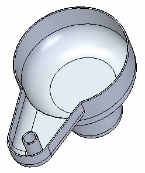
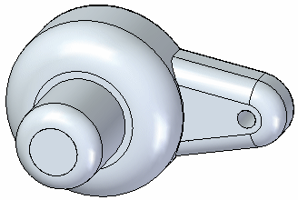
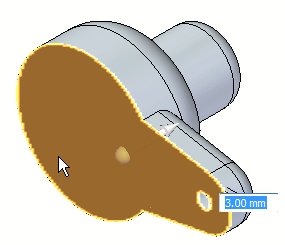
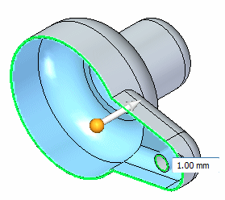
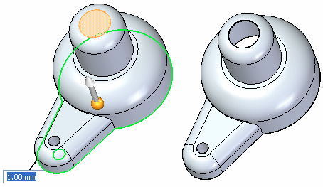
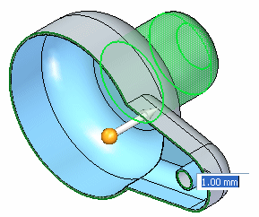

Activity: Create a plastic part using Thin Wall
This activity demonstrates the process of creating a plastic part.
Learn how to create and modify thin walls.
Click here to download the activity file.

-
Open the part file thinwall.par.

On the Home tab→Solids group, choose the Thin Wall command  .
.
Press Ctrl+I to change to an isometric view.
The entire part is automatically selected for the thin wall operation. Select the highlighted face for removal.

The dynamic preview shows the effect of the thin wall operation. In dynamic input box, type a thickness of 1 and keep the direction towards the inside.

Select the face shown to also remove it.

Right-click to accept.
Select the Undo command to reverse the thin wall.
Choose the Thin Wall command again and remove the top face as you did in the previous step.
Select the Exclude Faces option on the Thin Wall command bar.
Select the three faces shown (cylindrical, round, and cap faces). The thin wall preview updates.

Right-click to accept.
Save and close this file.
In this activity you learned how to thin wall a solid model. You also learned how to identify the open faces and faces to exclude.
-
Click the Close button in the upper-right corner of this activity window.